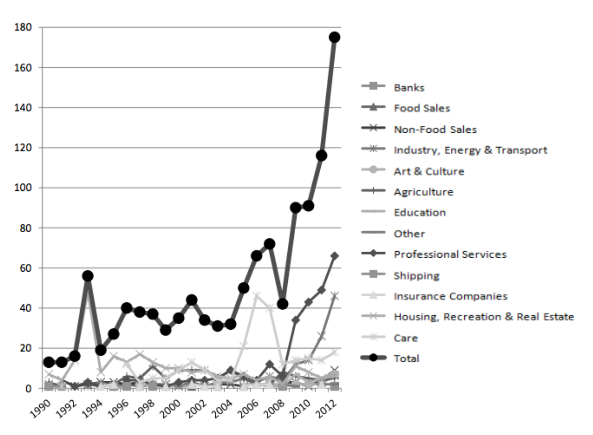

Politicoloog en econoom Francis Fukuyama stelde in 1992 dat we met het einde van de Koude Oorlog getuige waren van het “einde van de geschiedenis” en “het eindpunt van de ideologische evolutie van de mensheid en de universalisering van de westerse liberale democratie als de definitieve vorm van menselijk bestuur”.1 Daar valt echter het nodige op af te dingen.2
Markten, een moderne uitvinding
In tijden van economische crisis lijkt een zekere nostalgie op te komen, die niet geheel onredelijk is. Omdat de huidige westerse marktsamenlevingen hun burgers vaak niet eens het *recht om te leven—*een recht dat eeuwen geleden zelfs door feodale instituties werd toegekend—is historisch onderzoek zinvol. Misschien vinden we vergeten instituties uit het verleden—wellicht niet-marktgebonden mechanismen—die bruikbaar zijn voor de problemen van vandaag. Het verbaast dan ook niet dat boeken over economische geschiedenis populairder zijn dan ooit onder critici van de status quo. Debt: The First 5000 Years(2011), een boek van de anarchistische antropoloog David Graeber, is bijvoorbeeld enorm populair onder mensen die betrokken zijn bij de Occupy-beweging.
Deze hernieuwde belangstelling voor economische geschiedenis valt alleen maar toe te juichen. Geschiedschrijvingen zoals die van Graeber—waarin te vaak vergeten elementen van de geschiedenis worden blootgelegd—bestrijden namelijk de wijdverbreide mythe dat mensen altijd volgens marktprincipes hebben geleefd en goederen en diensten ruilden voor individueel gewin en winst.
De economische geschiedenis laat zien dat markten niet “vanzelf” ontstonden, maar in de afgelopen twee à drie eeuwen vaak van bovenaf werden opgelegd, ondanks hevig verzet van onderop. Zoals economisch historicus en antropoloog Karl Polanyi concludeert in het slothoofdstuk van The Great Transformation, dat voor het eerst in 1944 verscheen:
De economische geschiedenis onthult dat het ontstaan van nationale markten geenszins het resultaat was van de geleidelijke en spontane bevrijding van de economische sfeer uit overheidscontrole. Integendeel: de markt was het resultaat van bewust en vaak gewelddadig overheidsingrijpen, waarmee de marktorganisatie om niet-economische redenen aan de samenleving werd opgelegd.3
Bovendien toont de economische geschiedenis dat marktdiscipline nooit universeel werd ingevoerd, maar altijd een dubbele vorm aannam. Zoals taalkundige en filosoof Noam Chomsky het verwoordt: “marktdiscipline voor de zwakken, maar zo nodig de zorg van de verzorgingsstaat om de rijken en bevoorrechten te beschermen”.4 Die dubbele maat zien we vandaag nog steeds: failliete banken worden door staten met biljoenen dollars gered, terwijl failliete gezinnen uit hun huis worden gezet en sociale voorzieningen worden afgebouwd. Burgers krijgen marktdiscipline opgelegd, terwijl de financiële sector royale welvaartsregelingen ontvangt.5
Wie deze status quo en het “einde van de geschiedenis” ter discussie durft te stellen, moet met een alternatief komen. Niet noodzakelijkerwijs met een blauwdruk, maar op zijn minst met enkele leidende principes waarop het alternatief, of de alternatieven, kunnen rusten. Volgens mij moeten rechtvaardigheid, democratie en vrijheid daarbij de uitgangspunten zijn.
Ten eerste: hoewel marktsamenlevingen veel gebreken kennen, zijn niet al hun huidige instituties nutteloos. Denk aan sociale vangnetten, sociale huisvesting, gezondheidszorg en onderwijs. Hoewel deze voorzieningen te lijden hebben onder corruptie, wanbeheer en inefficiëntie, leveren ze burgers nog altijd de basisdiensten die nodig zijn om te overleven. Hervorm ze: ja. Maak ze transparanter: natuurlijk. Democratiseer ze zo snel mogelijk. Maar ze hoeven niet te worden afgeschaft.
Ten tweede moeten we, om onze verbeelding verder te openen, onze economische geschiedenis bestuderen. Niet om alle prekapitalistische instituties superieur te verklaren aan de onze, maar om ze zorgvuldig te beoordelen op zowel rechtvaardigheid als haalbaarheid in de huidige context. Vooral de meent—het collectieve eigendom en beheer van gedeelde hulpbronnen door lokale gebruikers—is volgens mij een prekapitalistische institutie die ook vandaag van nut kan zijn. Bovendien kunnen we “commoning”6 not niet alleen zien als een tijdelijke overlevingsstrategie wanneer marktsamenlevingen mensen onvoldoende werk en economische zekerheid bieden, maar ook als een levensvatbaar alternatief voor de kapitalistische onderneming en het marktmechanisme zelf.
Vóór de markt: meentgenoten, priesters en feodale heren
Laten we bekijken hoe mensen in prekapitalistische tijden hun productie en verdeling organiseerden, toen markten volgens Polanyi “niet meer dan een bijkomstige rol in het economische leven” speelden.7
Samengevat beschrijft Polanyi hoe prekapitalistische economieën door allerlei instituties werden bestuurd. Sommige berustten op symmetrie (gemeenschappen die goederen en diensten uitwisselden op basis van wederkerigheid), andere op centriciteit (kerken en koninkrijken) en weer andere op autarkie (huishoudens die voor zichzelf produceerden). Het marktprincipe was echter grotendeels afwezig en het winstmotief was “niet prominent”.
De meenten waren vooral gebaseerd op het principe van symmetrie, maar stonden niet los van kerken en koninkrijken. Dat blijkt uit een casestudy van historica Tine De Moor naar een meent in Vlaanderen die tussen de zestiende en achttiende eeuw bestond. De lokale priester hield de ledenregistratie bij en een plaatselijke heer hief belasting bij de meentgenoten. Voor het overige “functioneerde de meent autonoom”.8
Tot nu toe heb ik het belang van onderzoek naar economische geschiedenis benadrukt, alsof meenten alleen in geschiedenisboeken te vinden zijn. Maar in de meer traditionele samenlevingen van vandaag—of beter gezegd: de minder geïndustrialiseerde—bestaan nog altijd meenten die de uitbreiding van het mondiale kapitalisme hebben overleefd. Politiek econoom Elinor Ostrom ontving in 2009 de Nobelprijs voor Economie voor haar onderzoek naar deze meenten en voor het systematiseren van talrijke veldstudies naar wat zij “common-pool resources” noemt: collectief beheerde meren, bossen, waterbekkens en visbestanden.9 Ostrom toont aan dat veel lokale gemeenschappen, vooral in minder geïndustrialiseerde landen, ook vandaag uitstekend in staat zijn gemeenschappelijk bezit duurzaam te beheren met een grote verscheidenheid aan niet-marktgebonden mechanismen en met weinig of geen overheidsbemoeienis. Zolang lokale gebruikers met elkaar kunnen communiceren en er enig onderling vertrouwen bestaat, blijken mensen conflicten over gemeenschappelijk bezit vaak heel goed via dialoog te kunnen oplossen, zonder tussenkomst van staat of markt. Haar bevindingen staan haaks op het beroemde argument van ecoloog Garrett Hardin dat “vrijheid in een meent iedereen te gronde richt” en dat alle hulpbronnen daarom door staten of markten moeten worden beheerd.
We moeten de meenten niet romantiseren, stelt Ostrom, maar wel erkennen dat er meer bestaat dan markten en staten. Gemeenschappelijke eigendomsregimes zijn geen wondermiddel, maar vormen vaak duurzame oplossingen voor lokale problemen. Ostrom ontkent niet dat “vrijheid in een meent” botsende belangen kan opleveren—mensen kunnen tegelijk in hetzelfde water willen vissen—maar ze ziet dat mensen zulke tegenstellingen vaak prima via dialoog kunnen oplossen en onderling vertrouwen in stand kunnen houden.
Verenigbaarheid
Is de moderne wereld te complex voor de meenten?
Als mensen in het verleden uitstekend economieën zonder marktmechanismen konden beheren, zoals Polanyi stelt, en we dat vermogen nog altijd niet zijn kwijtgeraakt—althans niet in de minder geïndustrialiseerde samenlevingen die Ostrom bestudeert—rijst de vraag waarom markten en staten zo dominant zijn geworden ten koste van de meenten. Komt dat doordat niet-marktgebonden instituties onverenigbaar zijn met de complexiteit van moderne samenlevingen? Polanyi zou dit tegenspreken:
Hieruit mag geenszins worden afgeleid dat sociaaleconomische principes van dit type beperkt zijn tot primitieve werkwijzen of kleine gemeenschappen, of dat een economie zonder winst en zonder markt noodzakelijkerwijs eenvoudig moet zijn. De Kula-ring in West-Melanesië, gebaseerd op het principe van wederkerigheid, behoort tot de meest verfijnde handelstransacties die de mens kent; en in de beschaving van de piramiden vond herverdeling op gigantische schaal plaats.10
Kortom: Polanyi ziet in de hele prekapitalistische geschiedenis dat lokale gemeenschappen niet van elkaar geïsoleerd waren, maar economisch vaak goed met elkaar verbonden via verschillende centrale herverdelingsmechanismen—sommige democratischer, andere tirannieker. En zoals Ostrom bij de nog bestaande meenten van vandaag constateert: “Wanneer een gemeenschappelijke hulpbron nauw verbonden is met een groter sociaal-ecologisch systeem, worden bestuursactiviteiten in meerdere, in elkaar geneste lagen georganiseerd.”11
Wilden mensen dat hun grond en arbeid aan de markt werden onderworpen?
Ook de hypothese dat mensen er eenvoudigweg voor kozen de meenten te verlaten en de voorkeur gaven aan het marktmechanisme en particulier eigendom, kan worden verworpen. Historicus Peter Linebaugh onderzocht deze kwestie. Uit zijn beschrijving van het ontstaan van de markteconomie in Engeland blijkt dat de marktdiscipline met grote moeite van bovenaf werd ingevoerd en op ernstig verzet van onderop stuitte. Om een markt voor zowel grond als arbeid te scheppen, moesten gemeenschappelijke gronden immers worden geprivatiseerd en omheind, zodat de mensen die er voor hun levensonderhoud van afhankelijk waren er geen toegang meer toe hadden. Het is niet verwonderlijk dat velen zich tegen dit beleid verzetten.
Deze privatiseringen van gemeenschappelijke gronden kwamen bekend te staan als “enclosures” en vonden rond dezelfde tijd in verschillende westerse landen plaats.12 In een interview legt Linebaugh uit dat deze enclosure-beweging niet beperkt bleef tot gemeenschappelijke gronden, maar elk aspect van de samenleving raakte:
Er waren veel soorten omheining, maar wanneer we spreken over de Engelse enclosure-beweging, kreeg die vooral tussen 1760 en 1830 haar parlementaire vorm, dus in de tijd van de Franse, Haïtiaanse en Amerikaanse revoluties. Ze maakte gemeenschappelijke grond tot… ze privatiseerde de grond van Engeland. Jeanette Neeson, een van de grote historici van de enclosures, spreekt in een krachtige formulering over de “afsluiting van Engeland”. Zij stelt Engeland voor als het land zelf, en dat land werd van de mensen afgesloten met hekken, hagen, greppels, verboden-toegangsborden en zelfs voetangels, om de toegang te beletten tot grond die meentgenoten voorheen in hun levensonderhoud voorzag. De enclosure-beweging is dus in wezen de vernietiging van de meenten.13
Ook Polanyi benadrukt het geweld en de dwang waarmee de enclosure-beweging gepaard ging:
De enclosures zijn terecht een revolutie van de rijken tegen de armen genoemd. Heren en edelen ontwrichtten de maatschappelijke orde en braken met oude wetten en gebruiken, soms met geweld, vaak door druk en intimidatie. Ze beroofden de armen letterlijk van hun aandeel in de meent en braken de huizen af die de armen, dankzij de tot dan toe onaantastbare kracht van het gebruik, al lange tijd als het bezit van henzelf en hun erfgenamen beschouwden. Het weefsel van de samenleving werd uiteengereten; verlaten dorpen en ruïnes van woningen getuigden van de hevigheid waarmee de revolutie woedde. Ze bracht de verdediging van het land in gevaar, verwoestte steden, decimeerde de bevolking, verpulverde de overbelaste bodem, kwelde de mensen en veranderde fatsoenlijke landbouwers in een menigte bedelaars en dieven.14
Zo verdwenen de meenten door gewelddadige omheiningen en werd marktdiscipline opgelegd—uiteraard met de dubbele maat die Chomsky beschrijft: “marktdiscipline voor de zwakken, maar zo nodig de zorg van de verzorgingsstaat om de rijken en bevoorrechten te beschermen”.15 De hypothese dat de samenleving vrijelijk koos voor, of zich vanzelf ontwikkelde tot, een marktsamenleving met die dubbele maat is niet alleen theoretisch moeilijk te geloven, maar wordt ook door verschillende historici weerlegd.
Was commoning onverenigbaar met technologische vooruitgang en industrialisering?
Wat Linebaugh “commoning” noemt en Ostrom “common-pool resources”, heeft meestal betrekking op lokale natuurlijke hulpbronnen zoals meren, waterbekkens en bossen. Het is verleidelijk te concluderen dat de “primitieve institutie van de meent” nu eenmaal moet verdwijnen zodra samenlevingen industrialiseren en moderne technologieën invoeren. Meenten bestaan tegenwoordig immers alleen nog in traditionelere, minder geïndustrialiseerde samenlevingen. In geïndustrialiseerde samenlevingen werd de kapitalistische, hiërarchische onderneming de dominante productievorm. De zeggenschap over het werk raakte gescheiden van het eigendom—arbeiders bezitten hun fabrieken of kantoren niet—en er ontstonden vergaande specialisatie en een starre arbeidsdeling. Als we uitgaan van concurrerende markten waarin de efficiëntste productiemethoden overleven, zou daaruit volgen dat de kapitalistische organisatie efficiënter was dan gemeenschappelijke eigendomssystemen. Dat zou betekenen dat er een afruil bestaat tussen economische efficiëntie en gemeenschapswaarden, tussen zeer productief kapitalisme en leven zoals de Amish.16
Als we alles wat gemeenschappelijk bezit is als een meent beschouwen, waaronder coöperatieve werkplekken in eigendom van werknemers, houdt deze hypothese eenvoudigweg geen stand. Taalkundige Noam Chomsky bespreekt deze vermeende omgekeerde verhouding tussen gelijkheid en efficiëntie, nog zo’n wijdverbreide mythe binnen de economie:
[D]enk aan de wijdverbreide opvatting dat stappen naar gelijkere omstandigheden ten koste gaan van efficiëntie en de vrijheid beperken. De vermeende omgekeerde verhouding tussen bereikte gelijkheid en efficiëntie berust op empirische beweringen die al dan niet waar kunnen zijn. Als die verhouding bestaat, zou men verwachten dat industrieën in egalitaire gemeenschappen die eigendom zijn van en bestuurd worden door werknemers, minder efficiënt zijn dan vergelijkbare particuliere ondernemingen die op de zogenoemde vrije markt arbeid inhuren. Het onderzoek hiernaar is niet omvangrijk, maar wijst eerder op het tegendeel. Harvard-econoom Stephen Marglin heeft betoogd dat in de vroege fasen van het industriële stelsel harde maatregelen nodig waren om de natuurlijke voordelen te overwinnen van coöperatieve ondernemingen waarin geen plaats was voor bazen. Bovendien is er empirisch bewijs voor de conclusie dat “wanneer werknemers zeggenschap krijgen over beslissingen en het vaststellen van doelen, de productiviteit spectaculair stijgt”.17
Marglins onderzoek is hier buitengewoon relevant. In zijn artikel “What Do Bosses Do?” uit 1974 betoogt hij dat de kapitalistische onderneming tijdens de Engelse industrialisering niet van de door werknemers bestuurde werkplaats won omdat zij technologisch superieur of efficiënter was. De overwinning kwam doordat degenen die voordeel hadden bij de kapitalistische organisatie van de productie over de politieke macht beschikten om hun voorkeursmodel te laten zegevieren. Een behulpzaam beleidsinstrument was bijvoorbeeld het octrooisysteem, dat “de machtigere kapitalisten in de kaart speelde doordat het degenen bevoordeelde die over voldoende middelen beschikten om licenties te betalen (en zo terloops bijdroeg aan de polarisatie van de producerende klassen in bazen en arbeiders)”. Volgens Marglin zorgde dit octrooisysteem voor een “vertekening van technologische verandering in de richting van verbeteringen die pasten bij de fabrieksorganisatie” en eiste het “vroeg of laat zijn tol van alternatieven”. De politieke macht van kapitalisten zorgde er dus niet alleen voor dat nieuwe technologieën werden ingezet om hun macht over arbeid te vergroten, maar stuurde ook de technologische vooruitgang zelf in hun voordeel. In Marglins eigen woorden:
Het is belangrijk te benadrukken dat de discipline en het toezicht die de fabriek mogelijk maakte niets met efficiëntie te maken hadden, althans niet in de betekenis die economen aan dat begrip geven. Het disciplineren van de arbeidskrachten betekende een grotere productie tegenover een grotere inzet van arbeid, niet méér productie bij dezelfde inzet.18
Alternatieven
Ik heb betoogd dat de gemeenschappelijke gronden en meren niet verdwenen omdat mensen er vrijwillig voor kozen ze door markt en staat te vervangen, maar door politiek geweld. Ook heb ik betoogd dat commoning tijdens de industrialisering niet de dominante organisatievorm van de westerse industrie werd—via coöperatieve werkplekken in eigendom van werknemers—niet omdat de kapitalistische onderneming technologisch superieur of efficiënter was, maar omdat kapitalisten eenvoudigweg meer politieke macht hadden. De meenten verdwenen door politiek: als gevolg van menselijk handelen, niet door een onvermijdelijke oorzaak van buitenaf waarop mensen geen invloed hadden.
Neem mijn woord er niet zomaar voor aan. Dit is sociale wetenschap, geen natuurkunde, en mijn interpretatie van de geschiedenis is even gekleurd als elke andere. Wanneer we alternatieven bespreken—alternatieve historische ontwikkelingen of alternatieve toekomsten—begeven we ons op nog onzekerder terrein.
Had de vernietiging van de meenten kunnen worden voorkomen? Verschillende opvattingen zijn mogelijk. Volgens Polanyi was de “primitieve institutie van de meent” eenvoudigweg gedoemd te verdwijnen. Mensen konden hoogstens het tempo van de verandering vertragen, dat “vaak niet minder belangrijk was dan de richting van de verandering zelf”, omdat de “onteigenden” daardoor meer tijd kregen om “nieuw werk te vinden in de mogelijkheden die indirect met de verandering samenhingen”.19
Een andere visie is dat wij in westerse geïndustrialiseerde landen hoogstens kunnen genieten van een incidentele heropleving van de meenten, zoals het onderzoek van De Moor suggereert. Zij ziet dat perioden van liberalisering en vermarkting door de geschiedenis heen vaak worden gevolgd door perioden waarin veel nieuwe “instituties voor collectieve actie” ontstaan: burgerinitiatieven van onderop waarin “samenwerking en zelfregulering het vertrekpunt vormen voor de dagelijkse praktijk”, min of meer in de traditie van de meenten. De Moor constateerde een sterke groei van “collectieve actie” na de eerste marktontwikkelingen in de middeleeuwen, na “een krachtige golf van liberaal denken en privatisering in de negentiende eeuw” en zelfs vandaag (figuur 1), “na de privatisering van publieke diensten—het neoliberalisme—in de laatste decennia van de twintigste eeuw”.20
Deze incidentele heropleving is niet meer dan logisch, omdat markten en staten mensen vaak onvoldoende werk en economische zekerheid bieden om te overleven. Daardoor zijn zij gedwongen tijdelijk via commoning op elkaar terug te vallen, totdat hun weer betaald werk wordt aangeboden.
Een radicaler standpunt is dat commoning de fundamentele institutie van onze samenleving zou moeten zijn. Daarmee komen we op het terrein van radicaal links. Bedenk dat de traditie en herinnering van de meenten mede de basis legden voor tal van belangrijke linkse ideologieën, van anarchisme tot communisme. Linebaugh legt uit dat Karl Marx zelf schreef dat “de onteigening van meenten voor het eerst zijn belangstelling voor economie of materiële vraagstukken wekte”, verwijzend naar de criminalisering van een commoning-praktijk in het Moezeldal bij Trier, waar hij werd geboren.21

Figuur 1: Ontwikkeling van het aantal nieuwe coöperaties per sector van 1990 tot 2012
De radicale vraag is of we op commoning—eventueel gecombineerd met bepaalde elementen van onze verzorgingsstaten—kunnen bouwen, niet alleen als tijdelijk overlevingsmiddel onder ontwrichtende marktkrachten, maar als een fundamentele institutie van onze moderne samenlevingen die het marktmechanisme grotendeels vervangt.
Net als Marx, Chomsky en Linebaugh zijn er altijd veel denkers geweest die alternatieve “richtingen van verandering” durfden te verbeelden. Zij stelden dat niet alleen het tempo van verandering, maar ook de richting zelf afhangt van de menselijke wil. Noch de economische wetenschap, noch de geschiedenis zelf heeft ooit hun ongelijk bewezen.